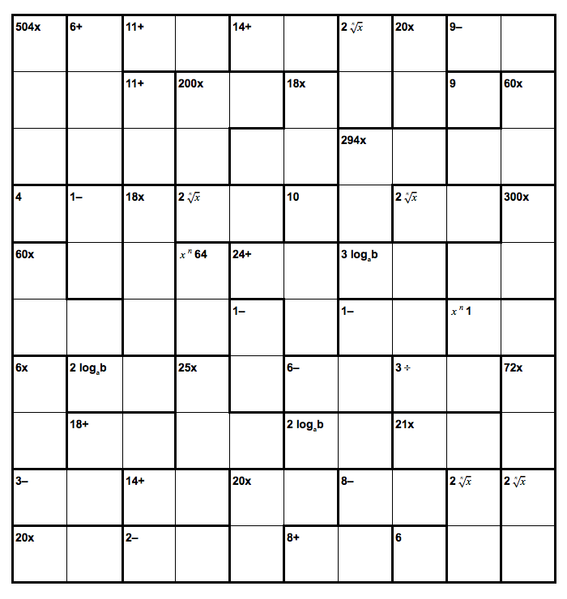
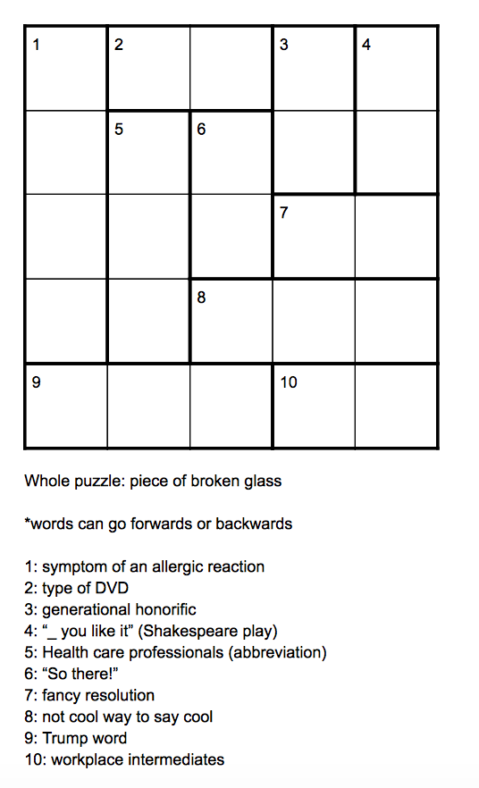

History

In 2007, toy inventor Robert Fuhrer, owner of Nextoy and creator of Gator Golf, Crocodile Dentist,
and dozens of other popular toys and games, encountered KenKen books published in Japan by the educational
publisher Gakken Co., Ltd. and titled "Kashikoku naru Puzzle" (賢くなるパズル Kashikoku naru pazuru, lit.
"smartness puzzle"). Fuhrer's company Nextoy, LLC (now holder of a trademark on "KenKen" and "KenDoku"
as a name for brain-training puzzles) and chess International Master Dr. David Levy helped bring the puzzles
to the attention of Michael Harvey, an editor of The Times (London). Harvey, impressed with what he
calls its "depth and magnitude", arranged for publication of such puzzles, starting in March 2008,
in The Times. Other papers, including the New York Times, followed suit. KenKen now appears in more than
200 newspapers in the United States and worldwide.
Today KenKen can be played online at www.kenkenpuzzle.com, the New York Times and Yahoo! Games online sites,
as well as on its iOS, Android and Kindle Fire apps. (from wikipedia)
Rules

The objective of a Kenken is to fill every row and column with specified digits (1-4 for a 4x4, 1-5 for a
5x5, etc.) without repeats. One must also fill in bolded shapes such that the numbers in the shape
create an equation using the specified operation (tradionallly addition, subtraction, multiplication, or divsion)
that equals the given number. The order of the numbers in the boxes can go in either
direction.
For example, in a 5x5, a block with 1- could be 5 and 4, 4 and 3, 3 and 2, or 2
and 1. In this example, the answer is 5 and 4 in both cases.
Other Variations (that I've made)

This is a 10x10 kenken.
(most Kenkens don't get bigger than 9x9)
In addition to the normal 4 functions, there are also logs and exponents.
So, for example, 2 loga(b) could have 2 and 4, or 3 and 9.
Similarly, 64 x^n could be 4 and 3, or 8 and 2.

This is a Crossword Kenken.
Instead of numbers, there are letters: just like in a kenken, the
same letters appear once in each row and column.
Instead of operations, there are crossword clues.
So, for example, clue 1 would be rash, which could read forwards or backwards.
Lastly, the 5 letters in each row in column are an anagram of some word, also given as clue.
In this puzzle,
the answer is "shard."